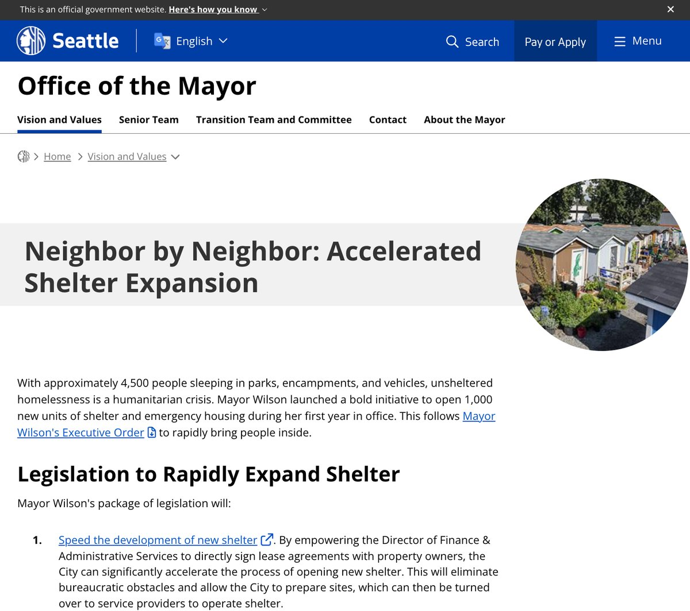
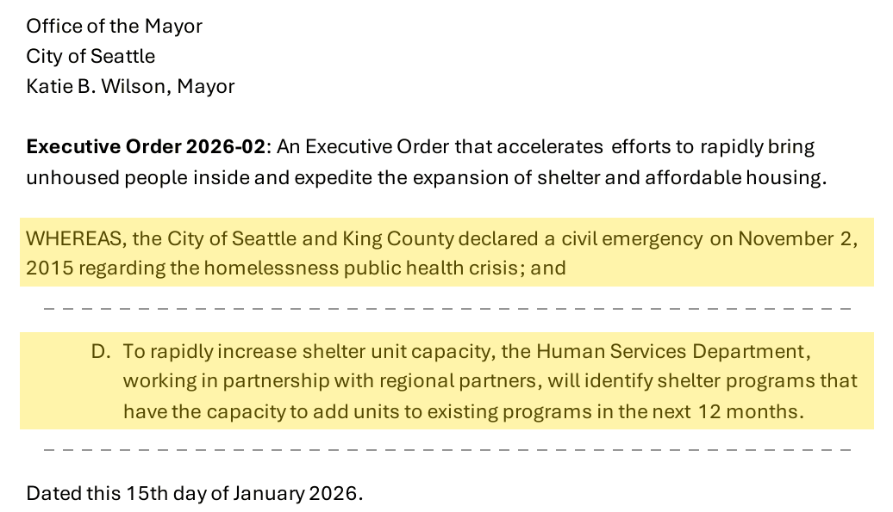
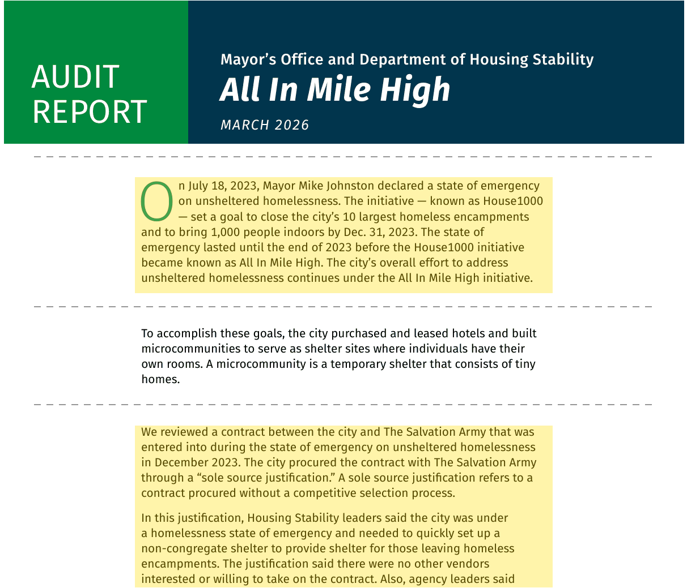
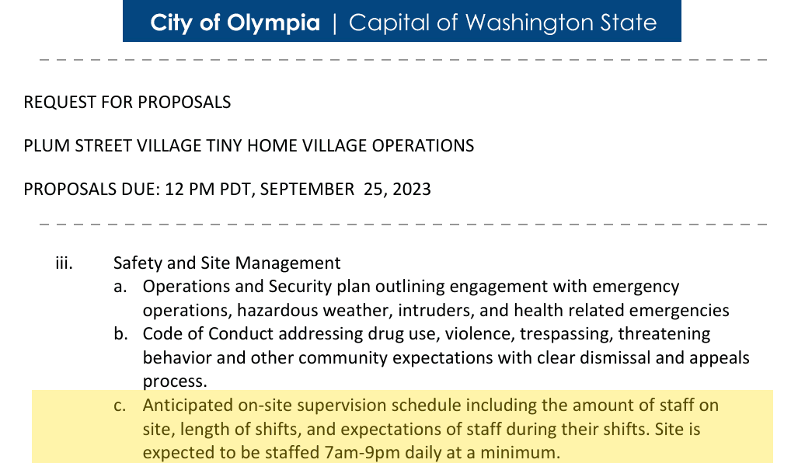

1,000 tiny homes or hotel rooms in 12 months
The short version
- The mayor promised 1,000 new units in her first year and opened about 280 in ten months. In September the goal became 960 over two years.
- Money wasn't the main problem. Running 1,000 tiny homes costs about $28M a year, an eighth of the city's homelessness budget. The slow part is opening villages one at a time, at 5–12 months each.
- Seattle has had the tool to go faster since 2015. Its homelessness state of emergency lets the mayor skip bidding and set aside permit steps. Denver used its own emergency to name 11 sites in 37 days. Used the same way, a Seattle village could take its first residents in about 6 weeks instead of 5 months estimate.
- Buy rooms that already exist. A motel on Aurora costs about $90–180k a room and is ready in weeks. $65M of unspent JumpStart money would buy about 260–430 of them estimate.
- Run each room for less. About $18k of a tiny home's $28k a year is two staff on site around the clock. A daytime staffer and a shared overnight patrol would halve the cost, keeping every case manager estimate.
- 1,000 is a yearly pace, not a finish line. About 5,600 people sleep outside in Seattle. Rooms only keep helping if people move on from them.
Why 1,000, and why a door that locks
About 5,600 people slept outside within Seattle's city limits in January 2026, about 1,300 of them in vehicles. Seattle's shelters are 93–94% full on a typical night. So the first problem isn't that people refuse help. It's that the help they'd accept doesn't exist yet.
- People take a room. When Seattle's JustCARE program offered hotel rooms at the South King Street camp in 2020–21, 57 of 78 people came inside (73%).
- People turn down a mat. The city's outreach teams had 25% of shelter offers accepted in 2024. The top reason people gave for saying no was that they wanted a tiny house, and every one of those answers came from someone offered only group shelter.
- Couples, people with pets, and people who've been robbed in shelters are the ones a door brings inside.
1,000 rooms a year is the mayor's own number. It's also roughly the pace that matters: about one room for every five or six people outside, every year, while the people in earlier rooms move on.
The record so far

"Units" in the mayor's promise means tiny home and microshelter villages, master-leased apartment buildings, RV safe parking and shelter-to-housing rent subsidies. Hotels, tents and dorm beds aren't on the list. Every model comes with 24/7 staff, case management and behavioral health care.
- January 2026Promises 1,000 new units in her first year, 4,000 over her term.
- MarchFinds $17.5M in leftovers for 500 units by the World Cup.
- JuneBayside opens. Five people move in the first week.
- SeptemberPallet, the tiny home maker, shuts down. The goal is reset to 960 units over two years.
- OctoberCloverleaf opens. The first-year goal moves to 2027.
Why it's slow
In rough order of weight. Money is real, but it isn't first.
- Every new place is a village, opened one at a time. Each needs land, a lease, permits, neighbors and an operator: 5–12 months apiece. Denver bought or leased hotels and opened 1,086 units in 14 weeks in late 2023.
- Villages are small, so there have to be many. The cap was 100 people until a 2026 law raised it to 150, with one pilot site allowed up to 250. The pilot site still hadn't been found in April. At about 75 homes a village, 1,000 a year means opening a new village every 3–4 weeks, forever.
- The fastest supplier closed. Pallet, which made the quick-to-install units at Bayside, shut down on September 4, 2026. LIHI's wood-framed tiny houses take longer to make.
- Extra steps. A good-neighbor agreement, an encampment-free plan around each site, an acuity work group, and the Council's demand for an exact plan before passing budget bills.
- Every place is a full-service, high-need place. The first 500 were aimed at people with high needs and intensive case management. That sets both the cost (about $28k) and the fill rate (7–10 people a week). There's no lighter option to bring people in quickly.
- The money is one-time and boxed in. The $17.5M in March was leftovers. A growing city budget gap limits everything else; it's the reason the mayor gave for resetting the goal.
Use the 2015 state of emergency
Seattle has been under a homelessness civil emergency since November 2, 2015, declared by Mayor Murray alongside King County. It has never been lifted. Under the city's emergency code the mayor can contract without competitive bidding and set aside some procedural requirements. Murray used it to open sanctioned camps without the usual land-use review. Mayor Wilson's January 2026 executive order cites the 2015 emergency and directs the Human Services Department to find programs that can add shelter units within 12 months. But Seattle still approves villages one at a time, and hasn't used the emergency to skip bidding or open sites in batches the way Denver did.

Denver's mayor declared a homelessness emergency on July 18, 2023, with a goal of 1,000 people indoors by the end of the year. In 37 days it named 11 possible sites for villages and ordered 200 tiny homes at once. It signed contracts without bidding, and the emergency order expired after 167 days and about $45M of spending. San Francisco used a fentanyl emergency in 2025 to open a police drop-off center in about two months.

One village, today and faster
About 75 tiny homes. "Today" is based on Bayside, Cloverleaf and Olympic Hills. Step lengths are our estimates.
Today: first move-ins at 5 months, full at 7. Faster: first move-ins at 6 weeks, tiny homes done at 3 months estimate. Denver built its first village in 45 days.
A generator costs about $80k a year more than grid power for 50 heated tiny homes estimate. Use it to open, then hook up.
How fast each kind of place can open
| Kind | Time to open | To run, a year | To build or buy | Evidence |
|---|---|---|---|---|
| Staffed tent siteA bridge, not the goal | Weeks | $8–12k | $2–3k estimate | San Diego opened its first Safe Sleeping site weeks after its 2023 ban and had about 760 tents by late 2024. |
| Hotel or motel, bought | Weeks to months a building | $21–45k | $90–250k a room | Denver opened 5 hotels in 14 weeks. Seattle's budget hotels, motels and hostels hold about 1,600 rooms in 32 buildings (our hotel map). |
| Tiny home village | 5–12 months a site | ~$28k | $34–55k a home | Cloverleaf took 5 months from announcement to opening; Bayside about 2½ months to fill. |
Buy rooms that already exist
A tiny home village is cheap to build but slow to open. A motel is the reverse: expensive to buy, but its rooms already have doors, plumbing and heat.
- Where the money is. JumpStart, Seattle's payroll tax on large employers, sends $140.2M to the Office of Housing in the 2027 proposed budget, mostly lent to nonprofits to build new buildings. Buying existing buildings is already one of the office's normal uses. The 2027 budget frees up $65M of JumpStart construction money that was never committed to a project. At $150–250k a room, that buys about 260–430 rooms estimate.
- The trade. Fewer new affordable apartments later. No one loses a home they have now.
- If more is needed. Council bonds ($100M costs about $7.7M a year for 20 years), or buildings the county is selling, such as the Inn at Queen Anne.
- Keep the rooms turning over. King County bought about 1,400 hotel rooms in two years but filled them as permanent housing, so the rooms never open up for the next person. Bought rooms for this pledge should be run as short-term rooms with a path out.
Run each room for less
A Seattle tiny home costs about $28k a year to run. Built up from LIHI's posted wages and staffing rules, about $18k of that is staff on site around the clock estimate. Villages for people with high needs keep at least two staff on site at all times.
| A 40-home village, per home per year | Today | Day staff, shared night patrol |
|---|---|---|
| Staff on siteToday: 2 monitors 24/7 plus a site manager. Instead: 1 staffer 8 hours a day who also runs the site, plus an overnight patrol shared by 3 villages | $18.4k | $3.9k |
| Case managers, 1 per 20 residents | $4.5k | $4.5k |
| Behavioral health specialist | $2.8k | $2.8k |
| Utilities, hygiene, food, insurance, upkeep | $2.8k | $2.8k |
| Total | $28.4k | $13.9k (−51%) |
Our estimate, built from LIHI's posted shelter monitor pay ($21.90–28.34 an hour), loaded 30% for taxes and benefits, with 10% operator overhead. The built-up total lands on the city's $28k average, which suggests the assumptions are about right. With the patrol shared by 2 villages, a home costs $14.6k. More on service levels.
- The same money, twice the homes. At $13.9–14.6k, the $28.4M that runs 1,000 tiny homes today would run about 1,950–2,040 estimate.
- Olympia already does it. Its 2023 request for proposals for Plum Street Village asked for staff on site "7am-9pm daily at a minimum," not 24/7. LIHI's actual cost there was about $23k a home.

- Keep the case managers. They're what moves people into housing. This changes only staff hours on site.
- The risks. Overnight is the political risk: LIHI says round-the-clock staff is how it keeps its safety promises to neighbors. Fentanyl is the safety risk: with no one on site overnight, every home needs naloxone and a way to call for help (below). Hotel rooms isolate people more, so a 24/7 desk stays there.
What other cities pay
Seattle isn't overpaying compared with other cities. Everyone pays for the same thing: staff on site 24 hours a day. The savings come from changing that staffing model, not from catching up with a cheaper city.
Bigger villages, and stop closing them
- Bigger villages. Staff cost about the same for 40 homes as for 150. Seattle's 2026 law allows villages of up to 150 people. San Diego added 235 tents to its existing sites for about $5k each a year, because the staff were already there.
- Stop closing villages. Seattle opened 8 villages since 2023 (281 homes) and closed 5 (about 200 homes), mostly because land leases ended, not because the money ran out. At $28k a home, keeping 200 open costs about $5–6M a year, the cheapest doors that lock the city has. The 2026 law lets the city lease land for villages directly; use it to find the next site before a lease ends.
The money is there
| 1,000 tiny homes | Per home | In all |
|---|---|---|
| Run for a year: staff 24/7, meals, case management | $28k | $28M a year |
| Build, with site work | $34–55k | $34–55M once |
- The mayor budgeted it: $37M for about 1,000 beds, over two years instead of one.
- Running 1,000 homes costs $28M a year, an eighth of the city's $229M homelessness budget and about what it spends clearing encampments ($29.9M).
- Building is one-time money. Fund balances, bonds, hotels the county is selling and philanthropy can pay for it. Medicaid can pay for some of the care inside, but not the rent.
- One year instead of two doesn't cost more to run. People are just inside a year sooner.
Five years, two paths estimate
Both paths reach 5,000 places by the end of year 5. Path A opens 1,000 village homes a year. Path B starts with 2,000 staffed tent spaces and 500 bought hotel rooms in year 1, then replaces the tents with villages, ending at 4,000 village homes and 1,000 hotel rooms.
| Path A: villages | Path B: fast start | |
|---|---|---|
| Places at the end of years 1–5 | 1,000 / 2,000 / 3,000 / 4,000 / 5,000 | 2,500 / 4,000 / 4,500 / 4,500 / 5,000 |
| Five-year running cost | $350M | $357M |
| Five-year build and buy cost | $175M | $348M |
| Years spent indoors, all people, five years | 12,500 | 18,000 (+44%) |
Assumes places open evenly through each year; running costs of $10k a tent, $25k a hotel room and $28k a village home; building or buying at $3k, $200k and $35k. Moving faster costs about the same to run. The extra money is one-time, which is the kind that's easiest to find.
Make a locked room safe
41% of King County's unsheltered people reported a substance use disorder in 2026. Behind a locked door is where people die of overdoses, so the room has to come with ways to check on people.
- Using alone is the risk. San Francisco residents of single-room hotels died of overdoses at 19 times the rate of other residents. In US hotel and motel overdose deaths, someone who could have helped was present only 35% of the time.
- Seattle has seen it. In July 2023 a woman's fentanyl death at DESC's Hobson Place went unnoticed for six days under a 48-hour check policy. DESC now checks every resident in person daily.
- What helps. Daily in-person checks, naloxone in every unit, and same-day methadone or buprenorphine: after an overdose, methadone cut the risk of dying of an opioid overdose by 59%. A village, where neighbors are close, is safer at lower staffing than a hotel room.
Plan the way out
A room only helps the next person when the last one moves on. Denver's rooms served about 7,000 people in two years because people left, but its average stay grew from 166 to 229 days.
- About 1 in 5 reach permanent housing. Denver: 18% of about 3,800 people served, by April 2025. Los Angeles's Inside Safe motels: about 25%, with about 40% back outside.
- Rooms beat mats. In Seattle in 2019, villages sent 34–37% of the people who left to permanent housing, against 3–6% from basic mats.
- Give room residents priority for the 500–800 supportive housing openings a year countywide, and fund recovery housing as an exit. Without exits, the 1,000 fill once and stop.
What other cities teach
Notes
- City of Seattle, “Neighbor by Neighbor” shelter expansion: 1,000 new units in the first year, 4,000 by the end of the term, and the four unit types. seattle.gov
- Units opened in 2026: Bayside 75, Olympic Hills 45, Belmont 31, Brighton 14, a youth site 24, Cloverleaf 90. Our tally from the city's announcements and the sources below; the first five (187 units through mid-September) are from the Denver plan for Seattle.
- KOMO, September 2026, on the reset to 960 units over 2026–27 and about $37M. komonews.com
- KUOW, October 21, 2026, on moving the first-year goal to 2027 and the new by-name strategy. kuow.org
- PubliCola, March 17, 2026: $17.5M for the first 500 units, about $28k a unit a year on average (Budget Director Pennucci), some upward of $45k. publicola.com
- Human Services Department, 2027–2028 proposed budget update, September 22, 2026. govdelivery.com
- Seattle's $229M city homelessness budget and the $29.9M Unified Care Team: our budget page, with its sources.
- About 5,600 people outside within city limits, January 2026, and about 1,300 in vehicles: our methodology page, from KCRHA's 2026 count and the University of Washington's October 2026 vehicle report.
- King County shelters 93–94% full on a typical night, down 689 beds since 2025: KCRHA coordinated entry performance data, July 2026. kcrha.org
- KUOW, August 25, 2021, on JustCARE hotel offers at the South King Street camp. kuow.org
- Seattle Unified Care Team reports, Q1–Q3 2023 (reasons for declining: wanted a tiny house 23%) clerk.seattle.gov; HSD 2024 annual report (25% of offers accepted) seattle.gov.
- Colburn et al., hotels as non-congregate shelter, Housing Policy Debate, 2022. nlihc.org
- Seattle Red on Bayside's first weeks and its intake pace. seattlered.com. Opening and cost: KOMO komonews.com; My Ballard myballard.com.
- Spokesman-Review, August 6, 2025 spokesman.com; KCRHA kcrha.org.
- Our Denver plan for Seattle, sections on costs, money, rooms and what Seattle is missing, with their sources (village openings and closures, Belmont and Bayside build costs, supportive housing openings, Denver's lengths of stay).
- South Seattle Emerald, October 30, 2026. southseattleemerald.org
- LIHI on the Cloverleaf announcement, May 2026. lihihousing.org
- PubliCola, September 3, 2026, on Pallet's closure. publicola.com
- Our Denver vs. Seattle analysis: 1,284 rooms in 16 months, 1,086 units in 14 weeks, the 61% drop, with its sources.
- PubliCola, April 16, 2026, on the shelter acceleration plan, the 150-person cap and the 250-person pilot. publicola.com. The Urbanist on the bills, March 5, 2026 theurbanist.org.
- Madison Park Times, November 5, 2015, on the mayor and King County declaring a state of emergency. madisonparktimes.com
- Fox 13, on the 2015 emergency still being in effect. fox13seattle.com
- Seattle City Council Insight, March 3, 2020, on what the mayor's civil emergency powers allow under the city's emergency code. sccinsight.com
- Cascade PBS, June 2016, on how Murray used the emergency. cascadepbs.org
- City of Seattle, Executive Order 2026-02, “Accelerate housing and shelter,” January 15, 2026, pages 1–2. wilson.seattle.gov
- Colorado Politics, August 24, 2023: 11 potential sites and 200 Pallet shelters. coloradopolitics.com
- Colorado Politics, January 2, 2024: the emergency order expires after 167 days and $45M, contracts without bidding, and the opening of the first micro-community. coloradopolitics.com
- Colorado Politics, March 12, 2024, on La Paz, Denver's largest micro-community. coloradopolitics.com
- San Francisco's 822 Geary, opened in about two months under a fentanyl emergency ordinance: Mission Local, April 2025 missionlocal.org; sf.gov sf.gov.
- City of San Diego on its first Safe Sleeping site. sandiego.gov
- The Stranger on Seattle's first city-sanctioned encampments. thestranger.com
- The Urbanist on Cloverleaf's joint permit review. theurbanist.org
- Village timelines from the Bayside, Cloverleaf and Olympic Hills sources in these notes. The step lengths and the “faster” bars are our estimates.
- CBS 8 on San Diego's Safe Sleeping sites: one site cost $1.56M for a year for about 136–186 tents, about $8–11.5k a tent (our arithmetic). cbs8.com. About $9–11k a tent from council contract figures: our other cities page.
- NBC San Diego, October 2024, on adding tents to the existing sites. nbcsandiego.com
- Days Inn at 9100 Aurora listing crexi.com; Shoreline Area News, July 2021, on the county's Holiday Inn Express purchase shorelineareanews.com; Kidder Mathews Seattle hotel market report, Q2 2026 kidder.com.
- Queen Anne News, August 27, 2024, on Health Through Housing costs per unit. queenannenews.com
- King County, Health Through Housing. kingcounty.gov
- For Seattle on the 2027 homelessness budget, October 26, 2026 forseattle.substack.com; City of Seattle 2027–28 Proposed Budget Overview seattle.gov.
- City of Seattle, bonds and debt service, 2026 adopted budget. seattle.gov. The $7.7M a year is our arithmetic for 20-year bonds.
- The Registry on King County listing the former Inn at Queen Anne. theregistryps.com
- LIHI's staffing rules (one monitor on site 24/7, at least two at higher-need sites, required case management): City of Kirkland issue paper on tiny house program models, October 2024 kirklandwa.gov. LIHI's posted union pay range for shelter monitors. The built-up budget is ours; see service levels.
- City of Olympia, Plum Street Village request for proposals, 2023. thejoltnews.com
- The JOLT on Plum Street Village's 2023 operating funding: LIHI's actual cost $676,093 for 29 homes. thejoltnews.com
- Our other cities page, “What a tiny home costs to run, city by city” and the city profiles, with their sources.
- Salem Reporter, August 16, 2023. salemreporter.com
- KCRHA, 2026 Point-in-Time Count executive report. kcrha.org
- Rowe et al., overdose deaths in San Francisco single-room hotels, Drug and Alcohol Dependence, 2019. pubmed
- CDC, MMWR, June 25, 2026, on overdose deaths in hotels and motels. cdc.gov
- KUOW, September 28, 2023, on Hobson Place. kuow.org
- Larochelle et al., Annals of Internal Medicine, 2018. nih.gov
- Denver Auditor, All In Mile High audit, March 2026 (the emergency declaration and goal, pages 1–2; the sole-source contract, page 29). denvergov.org; Colorado Sun, April 28, 2025 coloradosun.com.
- USC Center for Health Journalism, April 2026, on Inside Safe. centerforhealthjournalism.org
- PubliCola on 2019 exits by shelter type. publicola.com